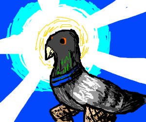

Pigeonism
This is a new age religious movement.
We aim to bring peace and freedom into the world.
Our founder is a professional libtard.
Praise be the pigeon overlords.
A picture of our supreme overlord:

source: https://drawception.com/game/kMcdGGSqef/pigeon-god/
He is a very kind god and will grant a pass to the afterlife to everyone who is kind, caring and a nice human to be around in general. He truly loves everyone, No matter if you're white, black, brown, yellow, red, blue, green, straight, gay, lesbian, bi, ace, queer, trans or whatever. If he didn't like you, he wouldn't have made you.
(Exceptions may include but are not limited to: murderers, racists, religious extrimists, facists)
How the system works
First is the supreme pigeon overlord, he rules over the pigeon overlords who rule over us.
They see your every move. Except what you do under the shower, in the toilet, in your bed or your browser history.
Otherwise they would be assholes. But the pigeon overlords are very nice and kind.
How to join
Just believe in the supreme overlord.
That is the only thing you need to do to become one of us.
The overlords will be watching over you now.
From that moment, you will be punished and rewarded as we do.
Also preferably sacrifice someone you hate or a murderer or similar to make the gods happy.
Columba omnes famulos Dei. (All hail the pigeon god.)
What to do as one of us
1. Pray to the supreme pigeon overlord
2. Make sacrifices. You will feel when you need to make one.
3. Continue your life as normal.